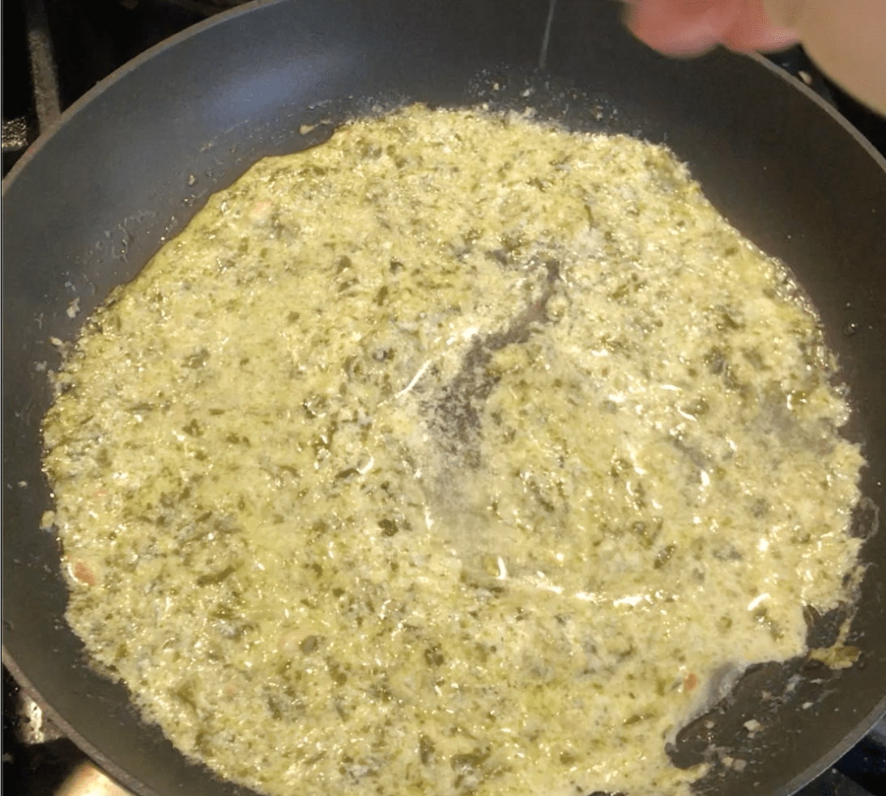

Ingredients
- 2 TBSP Pesto
- 1 TBSP milk
- 1/4 Cup flour
- 1 egg beaten
- a pinch of salt
- 1 Medium Potato
Step 1
Boil the potato till a knife easily slides thru (25 min) OR throw it in the microwave for 5 min. Peel and mash that hot one
Step 2
Mix in the egg, flour and salt and knead till combined.
Step 3
On a floured cutting board with bench flour, section into quarters and make a noodle, then cut into squares.
Step 4
Boil till it gets swollen and floats, then take it out after its been floating for a minute
Step 5
To make some pesto sauce, throw in a dollop of pesto, milk, and about 2 tbsp of pasta water to thin the sauce to the consistency you prefer.
Step 6
Toss the gnocchi in your sauce and enjoy!